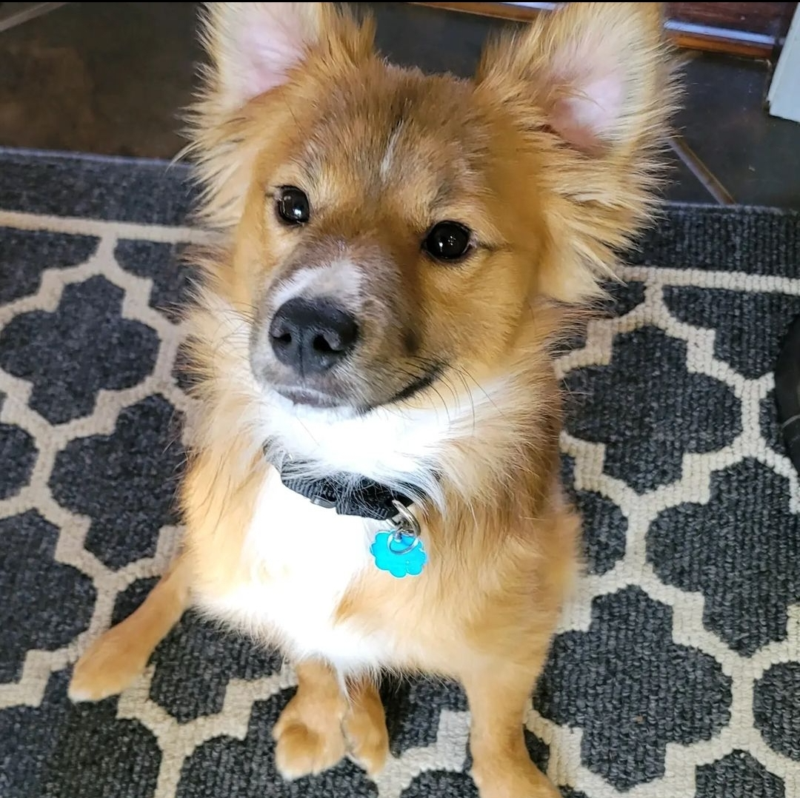
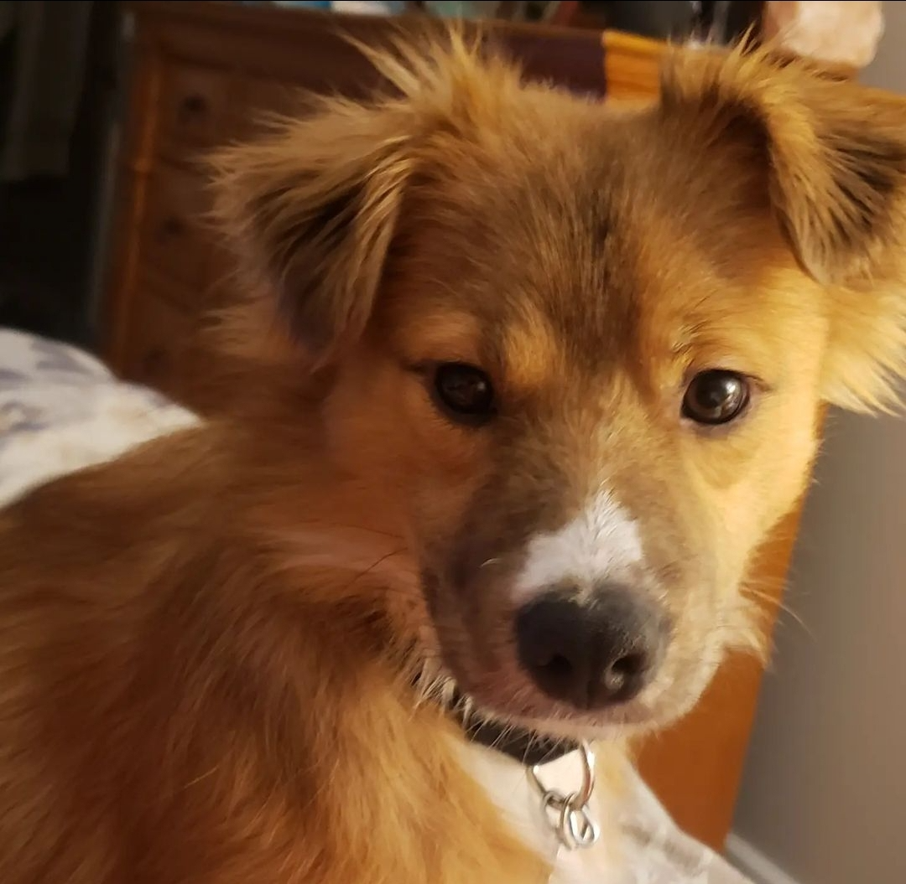
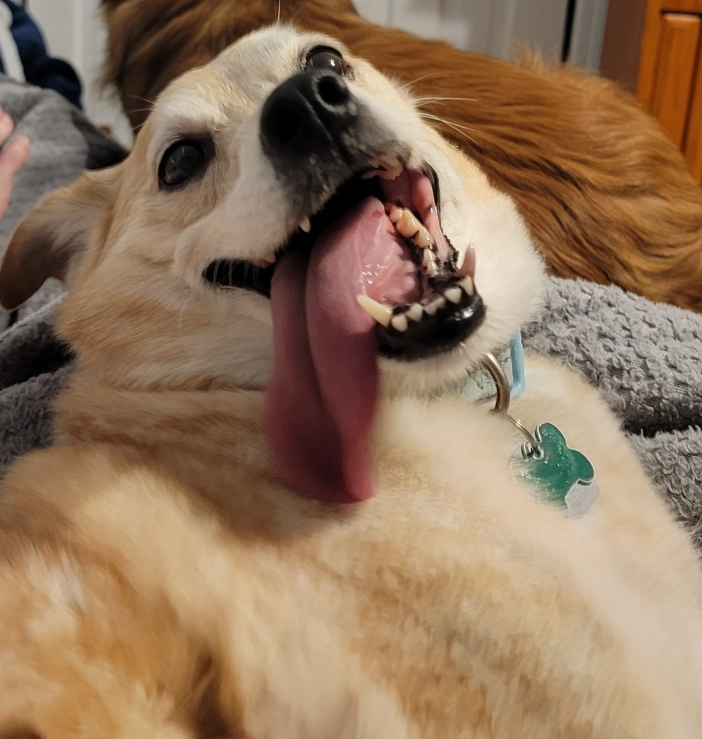
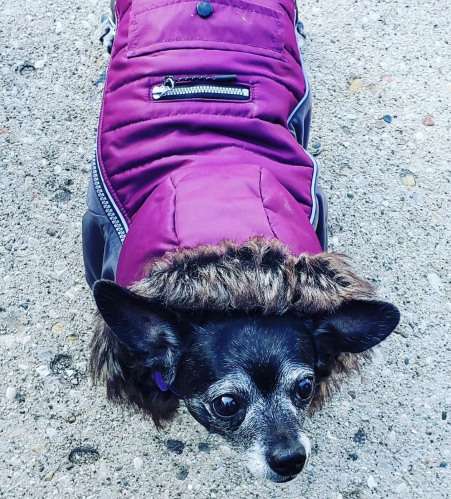

I have two dogs - Loki and Bailey
This is Loki! We got him in 2021 after our black lab passed. He was a total ball of mischief, hence the name Loki. He is our dog of mischief:
My mother always talks about how she doesn't like the dog, which is totally not true. You can tell with this picture of him laying on her bed.
That same picture is the background of her work monitor.
This is Bailey! We got her last summer on a whim. She is a total goofball of a dog and barks a TON:
She is the second female dog I have had in my life
This is Isabella, or we called her Izzy:
We had Izzy for about 12 years. This past January she became sick, and overnight into the big snow storm day, she passed in her sleep.
Izzy was a chihuahua weiner dog mix. We called her the 'Burnt Sausage that was left on the grill for too long'.
The three of them loved spending time outside in the sun, and who doesn't, really?